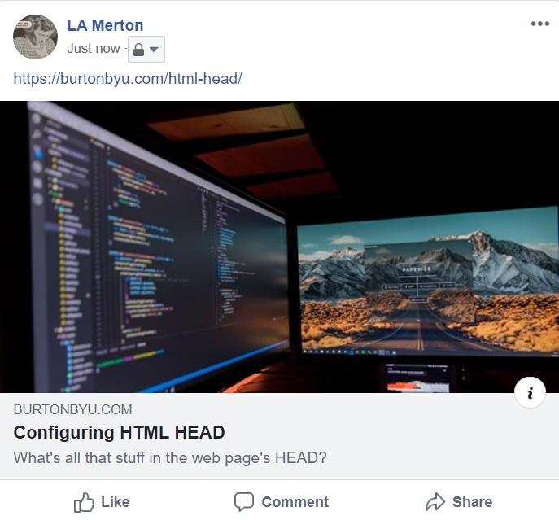
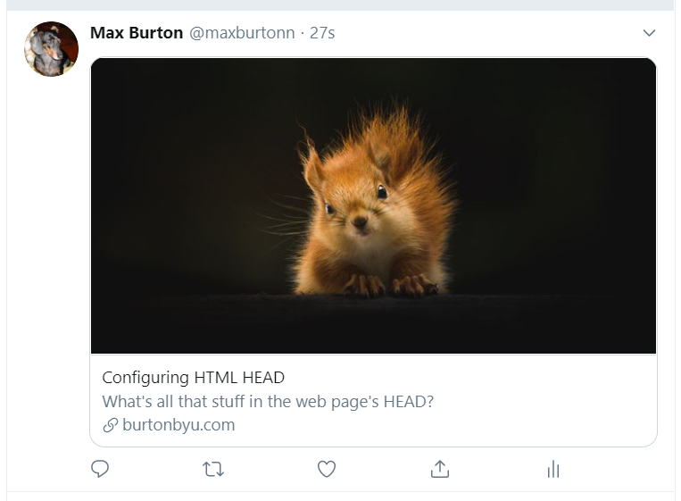

4.5. Configuring HTML <head>#
Learn more at
If interested, you can install the Open Graph Preview extension for the Chrome browser.
4.5.1. Essential <head> elements#
<!DOCTYPE html>
<!-- DOCTYPE must be at the top of your page, even before comments. This DOCTYPE
declaration indicates that your page is written with HTML5 -->
<!-- the <html> tags wrap the html content. Always include the language attribute.
en = English -->
<html lang="en">
<!-- the <head> contains all the information for the browser. Users are usually not
aware of what is in the <head> -->
<head>
<!-- these two meta tags should always appear first in the <head>. The charset
is character encoding. Stick with utf-8. The viewport is used with responsive
websites – set the page width to the device width and no zoom (scale = 1.0) -->
<meta charset="UTF-8">
<meta name="viewport" content="width=device-width, initial-scale=1.0">
<!-- force IE 8+ to use latest rendering engine -->
<meta http-equiv="X-UA-Compatible" content="ie=edge">
<!-- short description used by search engines to describe your site - 150
character limit -->
<meta name="description"
content="A description of useful meta tags for beginning front-end
developers.">
<!-- the page title
appears on the browser tab and is used by search engines. Try to keep length
below 55 characters -->
<title>HTML <head>: the basics</title>
4.6. Favicon#
By default, a browser will look for a favicon.ico file in the website root directory (usually public_html). An .ico file usually contains 3 or 4 different sizes of the same image. Browsers are moving to using PNG and larger size icons for apps and tiles. At a minimum, include a favicon.ico in your root directory. Below is a small sample of icons you can add. The snippet below (and icons) were generated by The Ultimate Favicon Generator.
<!-- favicon -->
<link rel="apple-touch-icon" sizes="180x180" href="/apple-touch-icon.png">
<link rel="icon" type="image/png" sizes="32x32" href="/favicon-32x32.png">
<link rel="icon" type="image/png" sizes="16x16" href="/favicon-16x16.png">
<link rel="manifest" href="/site.webmanifest">
x-icon editor – basic create your own icon, or upload an image and modify it
4.6.1. Facebook Open Graph#
Facebook open graph meta elements control how your content appears when shared on Facebook. The meta elements contain two attributes: property and content.
<!-- Facebook open graph control how your content appears when shared
on Facebook -->
<meta property="og:url" content="https://burtonbyu.com/html-head/index.html">
<meta property="og:title" content="Configuring HTML HEAD">
<meta property="og:description" content="What's all that stuff in the web page's HEAD?">
<meta property="og:image" content="https://burtonbyu.com/html-head/images/monitors.jpg">
<!-- Supply the image width and height. Minimum is 200 x 200 pixels, but
recommended is at least 1200 x 630 pixels. Images less than 600 x 315 pixels
will always display in a small link post. For twitter, file size must be less
than 1MB. Keep aspect ratio around 2:1 (1.91:1 for Facebook) to avoid cropping -->
<meta property="og:image:width" content="1200">
<meta property="og:image:height" content="600">
<!-- a description of the image for SEO and screen readers (don't start with
"image of" or "picture of") -->
<meta property="og:image:alt" content="magnifying glass and webpage">
<meta property="og:type" content="article">
Facebook’s A Guide for Sharing for Webmasters
Facebook’s og Sharing Debugger – will show you what your panel will look like on Facebook.
If you don’t have a Facebook (or Twitter account for the next section), you can review your og and Twitter card info here: IFramely Debug
The organic group information displayed on Facebook:
4.6.2. Twitter cards#
Twitter cards are similar to Facebook open graph meta elements, but the meta elements use content instead of property. If a twitter card property is missing, it can inherit some of the og properties.
<!-- twitter card
Similar to open graph, but twitter uses the name attribute instead of the
property attribute. Twitter can use Facebook og tags, including title and description,
or you can add twitter specific meta elements for those. -->
<meta name="twitter:card" content="summary_large_image">
<meta name="twitter:site:id" content="@maxburtonn">
<meta name="twitter:image" content="https://burtonbyu.com/html-head/images/twitter-image.jpg">
<meta name="twitter:image:alt" content="a brown squirrel">
Twitter’s
The card on Twitter:
4.6.3. CSS#
<!-- CSS Reset
since individual browsers apply their own styles to HTML, it's best to use
a CSS Reset to help ensure that your web page looks the same in most
browsers. Several CSS Resets exist. For this class, I prefer Normalize.
Load the stylesheet before any other stylesheets (including web fonts).
I recommend using a CDN (content delivery network) to load the normalize.css
file.
If you use a framework like Bootstrap, Normalize is included in it. -->
<link rel="stylesheet" href="https://cdnjs.cloudflare.com/ajax/libs/normalize/8.0.1/normalize.min.css">
<!-- add web fonts next -->
<link rel="stylesheet" href="https://fonts.googleapis.com/css?family=Work+Sans&display=swap">
<!-- finally your stylesheet -->
<link rel="stylesheet" href="styles/styles.css">
4.6.4. Extra for Android#
<!-- optional tag which can change the browser's title bar color or browser
highlights. Last I checked, it only works on Android :( -->
<meta name="theme-color" content="#1e3799">
4.6.5. A template for you to modify#
Copy the markup below and paste it into a new index.html file in VS Code. Before you begin, you need
A site topic and description
An idea for a favicon
An image to represent your site on social media, cropped to the correct dimensions (twice as wide as tall, at least 600px wide)
Modify the following
elements for your personal website:Change the title
Change the description
Use The Ultimate Favicon Generator to add favicons
Customize the open graph elements
Customize the twitter card
(optional) add a theme color
Some resources:
Unsplash – free high-resolution images
unDraw – free illustrations (download PNG version)
befunky – free online photo editor for resizing images
<!DOCTYPE html>
<html lang="en">
<head>
<meta charset="UTF-8">
<meta name="viewport" content="width=device-width, initial-scale=1.0">
<meta http-equiv="X-UA-Compatible" content="ie=edge">
<meta name="description" content="A description of useful meta tags for beginning front-end developers.">
<link rel="apple-touch-icon" sizes="180x180" href="apple-touch-icon.png">
<link rel="icon" type="image/png" sizes="32x32" href="favicon-32x32.png">
<link rel="icon" type="image/png" sizes="16x16" href="favicon-16x16.png">
<link rel="manifest" href="site.webmanifest">
<meta name="theme-color" content="#1e3799">
<meta property="og:url" content="https://burtonbyu.com/">
<meta property="og:title" content="Configuring HTML HEAD">
<meta property="og:description" content="What's all that stuff in the web page's HEAD?">
<meta property="og:image" content="https://burtonbyu.com/monitors.jpg">
<meta property="og:image:width" content="1200">
<meta property="og:image:height" content="600">
<meta property="og:image:alt" content="two computer monitors showing a web page and markup">
<meta property="og:type" content="article">
<meta name="twitter:card" content="summary_large_image">
<meta name="twitter:site:id" content="@maxburtonn">
<!-- the two twitter card properties below are optional. If you don't include them,
the twitter card will use the og:image -->
<meta name="twitter:image" content="https://burtonbyu.com/twitter-image.jpg">
<meta name="twitter:image:alt" content="a brown squirrel">
<title>HTML <head>: the basics</title>
<link rel="stylesheet" href="https://cdnjs.cloudflare.com/ajax/libs/normalize/8.0.1/normalize.min.css">
<link href="https://fonts.googleapis.com/css?family=Work+Sans&display=swap" rel="stylesheet">
</head>
<body>
<main>
<h1>Hello World!</h1>
<p>I have savvy meta tags.</p>
</main>
</body>
</html>